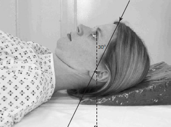

Skull(Half axial/Townes) Potrait
Centering point:- The central ray is angled caudally so it makes an angle of
30° to the orbito-meatal plane.
- Centre in the midline such that the beam passes midway
between the external auditory meatuses. This is to a point
approximately 5 cm above the glabella.
- The top of the cassette should be positioned adjacent to the
vertex of the skull to ensure that the beam angulation does
not project the area of interest off the bottom of the image

Cassette Size:24 x 30cm (10 x 12ins)
Exposure Factors:75kVp on 20MaS
FFD:100cm
Pathologies:#(Fracture), Trauma, FB(Foreign body),Idiopathic
Position of patient and cassette
- The patient lies supine on a trolley or Bucky table, with the
posterior aspect of the skull resting on a grid cassette.
- The head is adjusted to bring the median sagittal plane at rightangles
to the cassette and so it is coincident with its midline.
.
- The orbito-meatal base line should be perpendicular to the film.